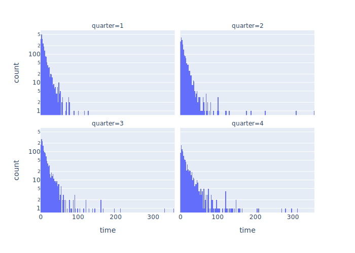

There are only two hard things in computer science:
cache invalidation and naming things.
— Phil Karlton
With respect,
I think that handling interrupts is harder than either of these.
Yesterday’s post explained how SimPy does this.
Today,
after several near misses,
we’ll look at how to add it to our simulation.
A Quick Recap
Our Simulation class now includes a process
that waits a random interval,
chooses a random developer,
and interrupts her by calling .interrupt:
When .interrupt is called,
SimPy injects a simpy.Interrupt exception into the target process;
the argument to .interrupt is attached to that exception object.
If we’re comfortable throwing away the task we’re currently working on,
the Developer process can catch the exception like this:
The trickiest part of this is canceling the outstanding request
to get something from the development queue.
As we discovered yesterday,
if we don’t do this,
the developer won’t ever get anything else from the queue.
Nearly Right
What if we don’t want to throw away our current task when we’re interrupted?
What if instead we want to handle the interruption and then resume that task?
Here’s an implementation that’s almost right:
# This code is wrong.defwork(self):task=NonewhileTrue:req=Nonetry:iftaskisNone:req=self.sim.dev_queue.get()task=yieldreqt_start=self.sim.nowyieldself.sim.timeout(task.dev_required-task.dev_done)task.dev_done+=self.sim.now-t_startiftask.is_done():task=Noneexceptsimpy.Interruptasexc:ifreqisnotNone:req.cancel()yieldself.sim.timeout(exc.cause)
Inside the try block we get a task if we don’t already have one,
then try to wait for as much time as the task still requires.
When we’re done we add some time to the task and check if it’s now complete.
If we’re interrupted,
we cancel any outstanding request for a new task
and then wait for as long as the interrupt tells us to.
There are (at least) two things wrong with this code.
The first and less important is that when we’re interrupted,
we throw away any work we’ve done on the task during this iteration of the loop.
That’s relatively easy to fix:
we just add some code to the except block to increment the .dev_done time in the task.
The bigger problem,
though,
is that sooner or later this code fails because of an uncaught Interrupt exception.
The problem is that we can be interrupted
inside our interrupt handler.
It isn’t likely,
which means it doesn’t happen very often,
but if we run the simulation often enough with different random seeds,
it eventually falls over.
A Corrected Version
The “fix” (I’ll explain the scare quotes around that word in a moment)
is to move interrupt handling into the try block.
To do that,
we have to add another state variable interrupt_delay
that tells the process if it’s currently supposed to be handling an interruption delay:
So why did I put scare quotes around the word “fix”?
Because I’m still not 100% sure this works.
It hasn’t failed yet,
despite multiple runs with different seeds and parameters,
but this code is now complex enough that I could well believe it contains
a one-in-a-million edge case.
I think the except block is now a critical region,
i.e.,
that no interrupts can occur within it
because none of those three lines hands control back to SimPy,
but I’m not completely sure.
And yes,
this code still throws away any work the developer has done on a task
during a particular loop iteration
if an interrupt occurs;
the interrupt handler should increment task.dev_done.
And yes,
it’s possible for an interrupt to be interrupted:
a more realistic implementation would stack interrupt delays,
but honestly,
if my boss interrupts me while I’m being interrupted,
I don’t have any qualms about discarding the first interruption.
Yaks and More Yaks
My goal with this series of blog posts was
to simulate the development process of a small software team.
I’ve spent most of the last week learning more about SimPy;
it feels like yak shaving,
but without it,
I don’t think I’d have confidence in the code shown above
(or be able to review its AI-generated equivalent).
The previous post in this series looked at the effects of re-work on throughput.
Its version of the simulation assumed that
a task that needed to be re-done was given back to the developer who had originally worked on it,
and that she would tackle that task once she finished whatever she was doing at the time.
In reality,
though,
developers (and testers) often interrupt what they’re doing,
switch to another task,
and then switch back.
This post looks at how to simulate that in SimPy.
A Simpler Model
To start with,
let’s go back to a simpler model in which one process adds new tasks to a queue at random intervals,
while developers take tasks,
work on them,
and then mark them as done.
While we’re building it,
we’ll use these parameters:
PARAMS={"n_dev":1,# number of developers"rng_seed":12345,# random number generation seed"t_arrival":8.0,# mean task arrival time"t_dev":5.0,# median development time"t_interrupt":3.0,# time between interrupts"t_sim":20,# length of simulation}
As before,
we define a Simulation class to hold all our bits and pieces.
Its constructor caches the parameters,
then creates the SimPy Environment,
the development queue,
and the developers.
It also creates a simple list called .log to store log messages:
For lack of anywhere better to put it,
we define the task generator as a method of Simulation.
The order of statements in the while loop ensures that
the first task is generated at t=0:
classSimulation:…previouscode…defgenerate(self):"""Generate tasks at random intervals starting at t=0."""whileTrue:yieldself.dev_queue.put(Task(self))yieldself.timeout(self.t_arrival())defprocess(self,proc):"""Shortcut for running a process."""returnself.env.process(proc)
As before,
we also give Simulation some convenience methods like .process
so that we can type sim.process(…) rather than sim.env.process(…).
Creating Interrupts
What’s new in this simulation is another process
whose only purpose is to interrupt developers.
It does this by choosing a random developer dev every few clock ticks
and then calling dev.proc.interrupt():
Developer.work is (going to be) a generator that simulates
an individual developer’s behavior.
Calling it as self.work() in Developer.__init__doesn’t start a process.
Instead, that call creates a generator object.
We pass that generator object to self.sim.process(),
which gives it to the SimPy Environment to run.
Doing this means that developers start running as soon as they are created.
Finally,
self.sim.process(…) returns the generator object that was passed into it.
We save this in the Developer object as self.proc
so that we can access it later.
(This step was the one that initially confused me.
Developer isn’t a SimPy process:
the generator object created by calling Developer.work is the process.
If we want to interrupt the process,
we need to get at the generator object,
and the logical place to store a reference to it is
in the object that defines its behavior.)
So let’s jump back to Simulation.annoy. It contains the lines:
This developer does the following each time it goes around the while loop:
Create a request to get a task from the development queue.
yield that request,
which hands the request to the SimPy Environment
and suspends this process until the request can be satisfied.
The result of yielding the request is a task from the development queue,
so wait a while to simulate working on that task.
Unless a simpy.Interrupt exception occurs,
in which case the developer cancels the request for a task
and goes around the loop again.
We have run into the need to cancel before.
In the first version of this code,
I assumed that interrupts would only occur while a developer was working on a task,
so the body of the except block was just pass:
# This version is wrong!defwork(self):whileTrue:req=Nonetry:req=self.sim.dev_queue.get()task=yieldreqyieldself.sim.timeout(task.dev_required)exceptsimpy.Interruptasexc:pass
What I found was that if the interrupt occurred while the developer was waiting on the queue,
and I didn’t cancel the request,
subsequent requests were never satisfied.
In other words,
once a developer had been interrupted,
she would never get any more work.
How It Behaves
I won’t bother to show the code that adds log messages to Simulation.log
or collects the states of all the tasks when the simulation is done,
but here’s the JSON output from a typical short run:
As you can see,
the first two tasks are interrupted and discarded while they’re being worked on,
while the developer manages to finish the third task before she’s interrupted.
The next step will be to resume tasks rather than just throwing them away.
The two parameters that affect re-work are p_rework_needed,
which is the probability that a tester is going to send a task back for more work,
and p_rework_chosen,
which is the probability that a developer will choose something from her re-work queue
rather than starting fresh work
when both are available.
The extreme cases are:
p_rework_needed = 0.0, meaning no tasks are ever sent back.
p_rework_needed = 1.0, meaning every task is always sent back.
(Note that this means no task will ever be finished:
instead,
tasks will circulate endlesslesly between development and testing,
and yes,
sometimes it does feel like that happens in real life.)
p_rework_chosen = 0.0, in which case
developers only re-do tasks when there is no new work queued up.
(We know from previous simulations that there are almost always
new tasks waiting to be started.)
p_rework_chosen = 1.0, in which case
developers only start new tasks when nothing needs to be re-done.
Finally,
this version of the simulation always sends tasks back to
the developers who originally worked on them
rather than allowing the first available developer
to re-do someone else’s work.
Final States
The figure below shows the number of tasks in each of the five possible states
at the end of the simulation
as a function of p_rework_needed and p_rework_chosen:
As expected,
lots of tasks are in the complete state when there is never any need for re-work,
while none are when re-work is always needed.
This finding may seem obvious,
but this simple check uncovered a couple of bugs in the simulation.
A more interesting finding is that
how developers choose tasks doesn’t seem to have much effect
on how many they get done:
while there is some variation,
the bars stay more or less the same height when we look at each row.
We can reach the same conclusion by looking at
the number of times tasks were developed and re-worked.
The sizes of the circles in the plots below reflect these counts:
Again,
the probability of needing re-work has an obvious impact,
while the probability of choosing new work vs. re-work doesn’t seem to.
It has taken me almost three hours to answer my earlier question about SimPy,
and once I recover,
I’m going to submit a couple of PRs for their documentation.
To recap,
the most recent version of the simulation
all testers to bounce work back to the development queue if they find bugs:
I’m going to walk through the code I wrote,
the problem I had,
and the solution I (think I’ve) found step by step.
If there’s a simpler way,
or if this is documentation clearly somewhere,
please let me know.
Tasks
A Task has a unique ID and keeps track of how many times it has been worked on:
Since I don’t want to have to pass a whole bunch of parameters around,
Simulation stores the SimPy Environment,
our single developer,
our single tester,
and the three queues:
one for new tasks,
one for tasks that need to be reworked,
and one for tasks that are ready for testing:
classSimulation:def__init__(self):# Environment.self.env=simpy.Environment()# One developer and one tester.self.developer=Developer(self)self.tester=Tester(self)# Queues for new development work, rework, and testing.self.q_dev=simpy.Store(self.env)self.q_rework=simpy.Store(self.env)self.q_test=simpy.Store(self.env)
Simulation also defines the generator that creates new tasks
and puts them in the ready-to-develop queue:
N_TASK=2# number of tasks to createT_GEN=1# time between tasksT_DEV=1# time to do developmentT_TEST=1# time to do testingT_SIM=4# how long to run the whole simulation
Workers
A generic Worker (either a developer or a tester)
caches the object that holds the overall simulation
and provides a couple of convenience methods for getting the current time
and for printing itself:
The tester gets a task from the testing queue,
waits a tick to simulate work,
increments the task’s internal count of how many times it has gone around the loop,
and then puts it in the rework queue:
classTester(Worker):defwork(self):whileTrue:# Get a task from the testing queue.print(f"{self}: wait for task(s)")task=yieldself.sim.q_test.get()print(f"{self}: got {task}")# Do testing.yieldself.sim.env.timeout(T_TEST)task.count+=1# Always put the task in the rework queue.yieldself.sim.q_rework.put(task)print(f"{self}: put {task} in rework queue")
Developers (the wrong version)
This code is wrong, but will be fixed below.
My original Developer waited until a task was available in either
the development queue or the rework queue,
then selected one of those tasks (giving priority to rework),
waited a tick to simulate work,
and put the task in the testing queue:
classDeveloperWrong(Worker):defwork(self):whileTrue:# Get either a task for development or a task for rework.req_dev=self.sim.q_dev.get()req_rework=self.sim.q_rework.get()print(f"{self}: wait for task(s)")result=yieldsimpy.AnyOf(self.sim.env,[req_dev,req_rework])# Give priority to rework.ifreq_reworkinresult:task=result[req_rework]print(f"{self} got {task} from rework with {len(result.events)} events")elifreq_devinresult:task=result[req_dev]print(f"{self} got {task} from dev with {len(result.events)} events")else:assertFalse,"how did we get here?"# Do development.yieldself.sim.env.timeout(T_DEV)# Put the task in the testing queue.yieldself.sim.q_test.put(task)print(f"{self}: put {task} in testing queue")
According to the documentation,
simpy.AnyOf creates an object that means “give me any of the following”.
Its result is a dictionary-like object
whose keys are the requests
and whose values are items from one or more of the queues being waited on:
“or more” because it’s possible for items to be available in multiple queues simultaneously.
Output from the Buggy Version
Here’s the output using the DeveloperWrong class shown above:
0.00 create task-0/0
DeveloperWrong/0.00: wait for task(s)
Tester/0.00: wait for task(s)
DeveloperWrong/0.00 got task-0/0 from dev with 1 events
1.00 create task-1/0
DeveloperWrong/1.00: put task-0/0 in testing queue
DeveloperWrong/1.00: wait for task(s)
Tester/1.00: got task-0/0
DeveloperWrong/1.00 got task-1/0 from dev with 1 events
2.00 create task-2/0
Tester/2.00: put task-0/1 in rework queue
Tester/2.00: wait for task(s)
DeveloperWrong/2.00: put task-1/0 in testing queue
DeveloperWrong/2.00: wait for task(s)
Tester/2.00: got task-1/0
DeveloperWrong/2.00 got task-2/0 from dev with 1 events
3.00 create task-3/0
Tester/3.00: put task-1/1 in rework queue
Tester/3.00: wait for task(s)
DeveloperWrong/3.00: put task-2/0 in testing queue
DeveloperWrong/3.00: wait for task(s)
Tester/3.00: got task-2/0
DeveloperWrong/3.00 got task-3/0 from dev with 1 events
A lot is going on in those 23 lines,
so let’s look at what the developer got from where:
DeveloperWrong/0.00 got task-0/0 from dev with 1 events
DeveloperWrong/1.00 got task-1/0 from dev with 1 events
DeveloperWrong/2.00 got task-2/0 from dev with 1 events
DeveloperWrong/3.00 got task-3/0 from dev with 1 events
Hm:
the developer is never taking tasks from the rework queue.
Is the tester putting them in?
Tester/0.00: wait for task(s)
Tester/1.00: got task-0/0
Tester/2.00: put task-0/1 in rework queue
Tester/2.00: wait for task(s)
Tester/2.00: got task-1/0
Tester/3.00: put task-1/1 in rework queue
Tester/3.00: wait for task(s)
Tester/3.00: got task-2/0
So what’s going on?
A Corrected Developer
Here’s the skeleton of the corrected developer’s work method:
classDeveloperRight(Worker):defwork(self):which="dev"take=NonewhileTrue:# Get either a task for development or a task for rework.req_dev=self.sim.q_dev.get()req_rework=self.sim.q_rework.get()print(f"{self}: wait for task(s)")result=yieldsimpy.AnyOf(self.sim.env,[req_dev,req_rework])…magichappenshere…# Do development.yieldself.sim.env.timeout(T_DEV)# Put the task in the testing queue.yieldself.sim.q_test.put(task)print(f"{self}: put {task} in testing queue")
The bit of magic in the middle is that as far as I can tell,
all of the requests that weren’t selected have to be canceled,
even if there wasn’t something in the queue at the time for the developer to take.
For example,
the first time the developer gets a task from the development queue,
the rework queue is guaranteed to be empty,
but we still have to cancel the request for something from it.
In order to demonstrate this,
I’ve filled in the magic portion of work with code that alternates between
taking work from the development queue (if available)
and taking work from the rework queue (ditto).
Of course,
if there is only one event in the result from AnyOf,
the code uses that,
but still cancels the other request:
defwork(self):which="dev"take=NonewhileTrue:…geteitherataskfordevelopmentorataskforrework…# Pick one.iflen(result.events)==2:print(f"{self}: ...got two events")ifwhich=="dev":take="dev"which="rework"else:take="rework"which="dev"elifreq_devinresult.events:print(f"{self}: ...got dev")take="dev"elifreq_reworkinresult.events:print(f"{self}: ...got rework")take="rework"else:assertFalse,"how did we get here?"# Now take it.iftake=="dev":print(f"{self}: ...taking dev")task=result[req_dev]req_rework.cancel()eliftake=="rework":print(f"{self}: ...taking rework")task=result[req_rework]req_dev.cancel()else:assertFalse,"how did we get here?"print(f"{self} got {task}")…dodevelopmentandputthetaskinthetestingqueue…
Here are the relevant bits of output when the simulation is run for 10 ticks instead of just 4:
DeveloperRight/0.00: ...taking dev
DeveloperRight/1.00: ...taking dev
DeveloperRight/2.00: ...taking dev
DeveloperRight/3.00: ...taking rework
DeveloperRight/4.00: ...taking dev
DeveloperRight/5.00: ...taking rework
DeveloperRight/6.00: ...taking dev
DeveloperRight/7.00: ...taking rework
DeveloperRight/8.00: ...taking dev
DeveloperRight/9.00: ...taking rework
As I said at the outset,
I’m going to submit some PRs for SimPy’s documentation
to shout loudly and clearly that outstanding requests need to be canceled
(or possibly recycled: I haven’t tried that yet).
Meanwhile,
I can now get back to playing with the impact of rework fractions on throughput.
I took a break from this series of posts for a couple of days
to focus on looking for a new role
and because I’ve hit a bit of a roadblock.
In the most recent version of the simulation,
testers can bounce work back to the development queue if they find bugs:
Tasks that have been sent back for more work always have higher priority than new tasks,
but that’s not realistic.
What I’d like to model is a system in which re-work is done by
the same developer who did the initial work.
I can do this by creating a re-work queue for each developer,
and use SimPy’s AnyOf operator to select from either queue:
Notice that the “get” request for the new-work queue is canceled
when there’s re-work to be done.
Doing this takes care of the case in which items were available in both queues
(which turns out to be very common);
I found by trial and error that canceling a “get” request has no effect
if the request is still pending,
which simplifies the logic a little bit.
So here’s my problem:
when there is re-work to be done and the developer is working on a new task,
I’d like to interrupt the developer and have them do re-work,
then resume their previous task;
in other words,
I’d like re-work to take immediate precedence over new work.
However,
if the developer is already doing re-work,
I don’t want to interrupt them.
SimPy supports interrupts:
if you have a process p, you can call p.interrupt() to throw an exception into it.
The process can catch this and do whatever it wants:
So now what?
As near as I can figure,
when a developer is interrupted,
it checks to see whether it’s already doing re-work or not.
If it is,
it puts the task associated with the re-work interrupt in its re-work queue.
If not,
it puts the (new) task it’s working on in the re-work queue
and switches tasks.
Hm,
that means the developer’s queue has to be a priority queue
so that re-work takes precedence over new work.
And we need to keep track of time spent so far on each task.
And there’s probably at least one corner case I haven’t thought of yet,
because this is a concurrent system with interrupts
and there are always corner cases.
A few final thoughts:
The title of this post is “In Search of Sturdiness”
because I think that word best sums up what I’m looking for.
I don’t care all that much if a solution is elegant or graceful or clever;
I want something sturdy because I want to make more changes to the simulation
and I don’t want to have to come back and re-design this part.
AI tools aren’t much help here,
at least not the ones I’ve tried.
They’re good at generating plausible answers,
but this situation needs one that’s right as well.
This is where I’d like to make use of a tool like Alloy or TLA+,
but they aren’t already part of my repertoire,
and I don’t have time for a three-month side quest to master one of them.
I’ve tried to find an experienced SimPy user, without luck.
If you are one,
and are willing to offer some design advice,
I’d be very grateful if you would reach out.
So far we’ve been collecting whatever data we want
whenever something significant happens in the simulation,
but we can’t do that in the real world.
Since we need to tidy up the simulation a bit,
let’s data collection a little more realistic as well.
The Overall Simulation
As before,
we’re going to store the major pieces of the simulation in a Simulation object
so that we don’t have to pass lots of bits and pieces to every function and method.
This class holds:
As before,
we provide some convenience methods to get at useful properties
of the underlying Environment:
classSimulation:…previouscode…@propertydefnow(self):"""Shortcut for current time."""returnself.env.nowdefprocess(self,proc):"""Shortcut for running a process."""self.env.process(proc)deftimeout(self,time):"""Shortcut for delaying a fixed time."""returnself.env.timeout(time)
and put all the randomization here as well:
classSimulation:…previouscode…defrand_task_arrival(self):"""Task arrival time."""returnrandom.expovariate(1.0/self.params["task_arrival"])defrand_test_time(self):"""Testing time."""returnrandom.lognormvariate(0,1)*self.params["median_test_time"]defrand_rework(self):"""Does this task need to be reworked?"""returnrandom.uniform(0,1)<self.params["prob_rework"]defrand_dev_time(self):"""Development time."""returnrandom.lognormvariate(0,1)*self.params["median_dev_time"]
Finally,
we provide one method to generate new tasks
and one to launch all the active processes in the simulation:
classSimulation:…previouscode…defgenerate(self):"""Generate tasks at random intervals starting at t=0."""yieldself.dev_queue.put(Task(self))whileTrue:yieldself.timeout(self.rand_task_arrival())yieldself.dev_queue.put(Task(self))defrun(self):"""Run the whole simulation."""self.process(self.generate())self.process(self.logger.work())forworkersin(self.developers,self.testers):forwinworkers:self.process(w.work())self.env.run(until=self.params["sim_time"])
Two things to note in the code above:
We always generate the first task at time 0.
We don’t have to do this,
but it always felt weird looking at the statistics
to have a small delay at the start before anything happened.
The logger is an active process,
just like the developers, testers, and task generator.
We’ll look at it in more detail in a bit.
Developers
Earlier posts in this series showed
how we give each developer (and tester) a unique ID
and how we automatically create lists of them.
We won’t repeat that code here,
since the most interesting thing about a developer is the work she does:
i.e.,
wait to a get a take from the development queue,
pause for a while to do the work,
and then put the task in the testing queue.
Recording Work
So what is WorkLog?
It’s a context manager,
i.e.,
a class that does something at the start of a block
and then automatically does some cleanup at the end of the block.
In our case,
what it does at the start is record the start time of the work
and change the state flags of the worker and task:
classWorkLog:"""Context manager to keep track of elapsed time."""def__init__(self,worker,worker_states,task,task_states,key_num,key_time):"""Construct."""self.worker=workerself.worker_states=worker_statesself.task=taskself.task_states=task_statesself.key_num=key_numself.key_time=key_timeself.start=Nonedef__enter__(self):"""Start the clock."""self.start=self.worker.sim.nowself.worker.state=self.worker_states[0]self.task.state=self.task_states[0]
At the end of the block—i.e.,
after the simulated work is done—the context manager
records how long the worker spent and how many tasks it has processed,
then changes the states of the task and worker again:
classWorkLog:…previouscode…def__exit__(self,exc_type,exc_value,traceback):"""Stop the clock."""elapsed=self.worker.sim.now-self.startself.worker.state=self.worker_states[1]self.worker["busy"]+=elapsedself.worker["n_task"]+=1ifself.task_states[1]isnotNone:self.task.state=self.task_states[1]self.task[self.key_num]+=1self.task[self.key_time]+=elapsedreturnFalse
Using WorkLog adds eight lines to what was a three-line simulation loop,
but we’ve learned the hard way as this code evolves
that keeping the record keeping for developers and testers in sync is error-prone.
Putting that code in a class,
and ensuring that the end-of-work record keeping is always done,
speeds up development.
Testers
The Tester class is similar to the Developer class:
This class gets work from the ready-to-test queue,
and then decides once the work is done
whether the task needs to be re-developed or not.
If it does,
it goes back into the ready-to-develop queue with high priority
to ensure that tasks needing rework are done before tasks that haven’t been touched yet.
Without this rule,
far fewer tasks are completed,
and far more tasks are half-done at the simulation’s end.
Logging
It’s finally time to look at the Log class that records data.
Its constructor makes space to record snapshots of
the states of all the tasks in the system,
the lengths of all the queues,
and what the developers and testers are doing:
classLog:"""Keep a log of interesting things."""def__init__(self,sim):"""Construct."""self.sim=simself.snapshot={"tasks":[],"queues":[],"workers":[],}
The generator that does the active work is simplicity itself:
record the state of the simulation,
then wait a fixed interval
(which we will initially set to one clock tick):
The code to record the simulation state is a bit messy,
because it depends on the implementations of various classes,
but in brief it creates records for:
the state of every task in the system;
the lengths of the two queues; and
the state of each developer and tester.
def_record(self):"""Record a log entry at a particular moment."""now=self.sim.nowfortinLabeled._all[Task]:self.snapshot["tasks"].append({"time":now,"id":t.id,"state":str(t.state)})forname,queuein(("dev",self.sim.dev_queue),("test",self.sim.test_queue)):self.snapshot["queues"].append({"time":now,"name":name,"length":len(queue.items)})forkind,clsin(("dev",Developer),("test",Tester)):forwinLabeled._all[cls]:self.snapshot["workers"].append({"time":now,"kind":kind,"id":w.id,"state":str(w.state)})
What Have We Learned?
The first thing we learned from this refactoring is that
roughly half the code is devoted to collecting data.
This won’t come as a surprise to anyone who has ever built a monitoring tool:
figuring out what’s going on is often as hard as making things happen,
and sometimes harder.
The second thing we’ve learned is that our simulation can still surprise us.
The graph on the left shows the lengths of the develpment and testing queues over time,
while the one on the right shows how many tasks are in each of the possible states:
Queue Lengths
Task States
The steady growth in the number of tasks waiting for a developer makes sense:
we’re generating new ones faster than they can be completed.
But why does the length of the testing queue rise and then fall?
Is it just random variation?
Or is it revealing some unexpected property of our development process?
That question will have to wait for tomorrow.
Let’s take another look at the log-scaled version of [yesterday’s chart][what-changed]:

There hasn’t been any turnover in the team or a major rewrite of the product,
so why has the number of bugs that take more than 100 hours to close
been creeping up slowly but steadily?
Luckily,
we have access to the source code of the simulation,
so we can get a definitive answer.
(Yes, this is cheating…)
The first difference is that
the development and testing queues are priority queues:
The last two lines of work say,
“If testing reveals that this task needs to be re-done,
put it back in the development queue with high priority.”
If you’ll excuse a bit more ASCII art,
this change means that our simulation is now:
From quarter to quarter,
the probability of QA revealing that a task needs to be re-done
has gone from 0% to 50%.
As noted yesterday,
we see a corresponding decrease in the total number of tasks completed each quarter:
quarter
number
1
2222
2
1912
3
1525
4
993
What these numbers don’t tell us is why.
Are our testers getting better at finding bugs?
Are our developers making more mistakes because they’re burning out?
Or has there been some sort of change in how work is being tracked?
(0% rework in the first quarter seems suspicious…)
Once again,
data can draw our attention to things that need to be explained,
but we still have to find the explanation.